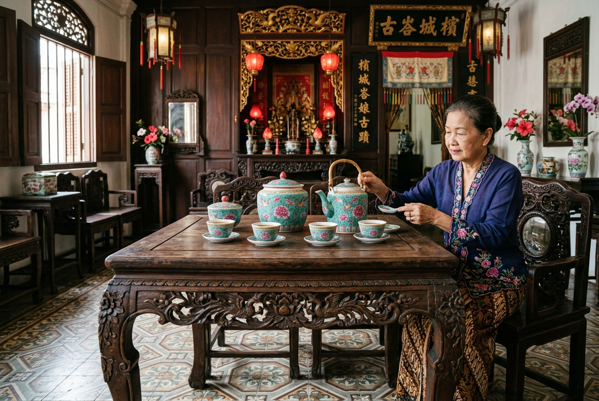

Medan (ID) - Melaka (MY)

Jalur Peranakan Selat Malaka merangkum perjalanan sejarah panjang perdagangan maritim. Di sinilah budaya Tionghoa berpadu dengan kearifan lokal Melayu pesisir, melahirkan kebudayaan luhur "Peranakan" atau yang juga sering disebut sebagai kebudayaan "Baba Nyonya".
Status Kunjungan: Medium. Lebih difokuskan pada tur edukasi arsitektur rumah-rumah warisan bersejarah (heritage houses) dan museum yang dikelola secara independen oleh keluarga turun-temurun lintas dua negara.
Sebagai contoh pusat akulturasi di sisi Sumatera (Indonesia), berikut adalah lokasi salah satu mansion ikonik bersejarah.